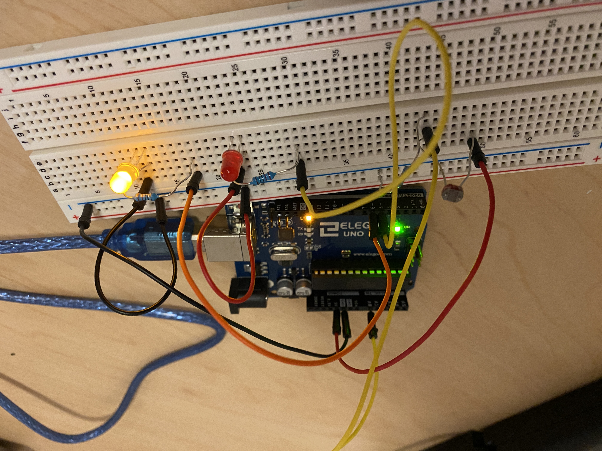

Yuming's Assignment 3!
This is the circuit that I built with 2 LEDs and a photoresistor. I picked red and yellow because they have the same voltage drop.

These are my calculations and schematics. I picked 220 ohm resistors because it was the lowest resistor that I had above the calculations for the 2 LEDS and I used a 10k resistor for the photoresistor so that all the electrons will flow to ground.

This gif shows that the red LED lights up during the calibration period and after it is done calibrating, the photoresistor can be used to turn the yellow LED on and off.
.png)
This is what gets printed to my serial monitor during the callibration period.
Here is my Arduino code:
// Credits: Some of the code has been taken from the Calibration example by David A Mellis, Tom Igoe, and Zachary J. Fields.
// These constants won't change:
const int sensorPin = A0; // pin that the sensor is attached to
const int ledPin = 6; // pin that the yellow LED is attached to
// variables:
int sensorValue = 0; // the sensor value
int sensorMin = 1023; // minimum sensor value
int sensorMax = 0; // maximum sensor value
void setup() {
Serial.begin(9600); // connect to serial monitor
// turn on red LED to signal the start of the calibration period:
pinMode(5, OUTPUT);
digitalWrite(5, HIGH);
// calibrate during the first five seconds
while (millis() < 5000) {
sensorValue = analogRead(sensorPin);
// record the maximum sensor value
if (sensorValue > sensorMax) {
sensorMax = sensorValue;
}
// record the minimum sensor value
if (sensorValue < sensorMin) {
sensorMin = sensorValue;
}
// print message to serial monitor that system is still callibrating
Serial.println("Still callibrating...");
}
// signal the end of the calibration period
digitalWrite(5, LOW);
}
void loop() {
// read the sensor:
sensorValue = analogRead(sensorPin);
// in case the sensor value is outside the range seen during calibration
sensorValue = constrain(sensorValue, sensorMin, sensorMax);
// apply the calibration to the sensor reading
sensorValue = map(sensorValue, sensorMin, sensorMax, 0, 255);
// fade the LED using the calibrated value:
analogWrite(ledPin, sensorValue);
}